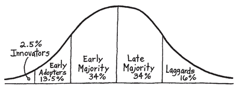

7
HOW A TIPPING POINT TIPS
If I told you I knew of a company that invented an amazing new technology that will change the way we consume TV, would that pique your interest? Perhaps you’d be interested in buying their product or investing in their company. It gets better. They have the single best product available. Their quality is through the roof, way better than anything else on the market. And their PR efforts have so been remarkable, they’ve even become a household name. Interested?
This is the case of TiVo. A company that seemed to have everything going for them but turned out to be a commercial and financial failure. Since they seemed to have the recipe for success, TiVo’s flop defied conventional wisdom. Their struggles, however, are easily understood if you consider that they thought WHAT they did mattered more than WHY. They also ignored the Law of Diffusion of Innovations.
In 2000, Malcolm Gladwell created his own tipping point when he shared with us how tipping points happen in business and in society. In his aptly named book The Tipping Point, Gladwell identifies groups of necessary populations he calls connectors and influencers. With little doubt Gladwell’s ideas are spot-on. But it still begs the question, why should an influencer tell anyone about you? Marketers are always trying to influence the influencers, but few really know how. We can’t dispute that tipping points happen and the conditions that Gladwell articulates are right, but can a tipping point happen intentionally? They can’t just be an accidental phenomenon. If they exist, then we should be able to design one, and if we can design one, we should be able to design one that lasts beyond the initial tip. It’s the difference between a fad and an idea that changes an industry or society forever.
In his 1962 book Diffusion of Innovations, Everett M. Rogers was the first to formally describe how innovations spread through society. Thirty years later, in his book Crossing the Chasm, Geoffrey Moore expanded on Rogers’s ideas to apply the principle to high-tech product marketing. But the Law of Diffusion of Innovations explains much more than just the spread of innovation or technology. It explains the spread of ideas.
If you don’t know the law, you’re likely already familiar with some of its terminology. Our population is broken into five segments that fall across a bell curve: innovators, early adoptors, early majority, late majority and laggards.

As the law states, the first 2.5 percent of the population are the innovators, and the next 13.5 percent are early adopters. Innovators, Moore says, pursue new products or ideas aggressively and are intrigued by any fundamental advance; being first is a central part of their lives. As their name suggests, innovators are the small percentage of the population that challenges the rest of us to see and think of the world a little differently.
Early adopters are similar to innovators in that they appreciate the advantages wrought by new ideas or technologies. They are early to recognize the value of new ideas and are quite willing to put up with imperfection because they can see the potential. Although quick to see the potential and willing to take risks to try new technologies or ideas, early adopters are not idea generators like the innovators. But both groups are similar, as Moore says, in that they rely heavily on their intuition. They trust their gut.
Early adopters, like innovators but to a lesser degree, are willing to pay a premium or suffer some level of inconvenience to own a product or espouse an idea that feels right. Those on the left side of the diffusion curve are the ones who stood in line for six hours to be among the first to buy the iPhone, Apple’s entry into the mobile phone market, even though they could have walked into a store a week later and bought one without waiting. Their willingness to suffer an inconvenience or pay a premium had less to do with how great the product was and more to do with their own sense of who they are. They wanted to be the first.
These are also the personality types who bought flat-screen TVs when they first came out even though they cost upwards of $40,000 and the technology was still far from perfect. My friend Nathan fits this profile. I walked around his house once and counted no fewer than twelve Bluetooth earpieces for his mobile phone lying around his house. I asked him why he had so many. “Did they all break?” I queried. “No,” he replied, “they came out with a new one.” (There were also about five laptops, various models of BlackBerry smart phones and boxes of other gadgets lying about that never quite worked that well.) Nathan is an early adopter.
The next 34 percent of the population are the early majority, followed by the late majority, and finally the laggards on the far right side of the spectrum. Laggards are the ones who buy touchtone phones only because they don’t make rotary phones anymore. The early and late majority are more practical-minded. For them, rational factors matter more. The early majority is slightly more comfortable with new ideas or technologies, while the late majority is not.
The farther right you go on the curve, the more you will encounter the clients and customers who may need what you have, but don’t necessarily believe what you believe. As clients, they are the ones for whom, no matter how hard you work, it’s never enough. Everything usually boils down to price with them. They are rarely loyal. They rarely give referrals and sometimes you may even wonder out loud why you still do business with them. “They just don’t get it,” our gut tells us. The importance of identifying this group is so that you can avoid doing business with them. Why invest good money and energy to go after people who, at the end of the day, will do business with you anyway if you meet their practical requirements but will never be loyal if you don’t? It’s not too hard to recognize where people fall on the spectrum once you’re in a relationship with them; the opportunity is to figure out which is which before you decide to work with them.
We all sit at different places on this spectrum depending on the product or idea. Most of us are fiercely loyal to certain products and ideas at various times and demonstrate left-side-of-the-curve behavior. And for other products or ideas we exhibit right-side-of-the-curve behavior. When we sit on one side of the spectrum, we often have a hard time understanding those on the other side because their behavior doesn’t make sense to us. My sister is an early adopter when it comes to fashion trends, whereas I’m firmly in the late majority. It was only recently that I finally caved and bought a pair of overpriced designer blue jeans. I admit they look good, but I still think they aren’t worth the money and I can’t understand why my sister thinks they are.
In contrast, I’m an early adopter for some technologies. I bought a Blu-ray DVD player before they had perfected the technology. I paid about four or five times more for it compared to a regular DVD player. My sister can’t understand why I waste my money on all that “useless stuff,” as she puts it. We will never see eye to eye on this stuff.
Each of us assigns different values to different things and our behaviors follow accordingly. This is one of the major reasons why it is nearly impossible to “convince” someone of the value of your products or ideas based on rational arguments and tangible benefits. It’s the ol’ Ferrari and Honda Odyssey debate again. Designer jean companies (or my sister) can talk to me until they are blue in the face about the importance of fabric quality, design and workmanship—it goes in one ear and out the other. Similarly, it can be proven, beyond a shadow of doubt, the rational benefits of choosing a $500 DVD player over a $100 one; my sister won’t hear a word of it. And so the game of manipulation ensues. Again, although always effective, manipulations don’t breed loyalty and they increase costs and stress for all parties involved.
Most people or organizations that have something to sell, be it a product, service or idea, hope to achieve some level of mass-market success or acceptance. Most hope to penetrate the bell of the curve. Getting there, however, is easier said than done. When you ask small businesses about their goals, many of them will tell you they want to be a billion-dollar business in X number of years. The odds of that happening, unfortunately, don’t look good. Of the 27 million businesses registered in the United States, fewer than 2,000 ever reach a billion dollars in annual revenues. And 99.9 percent of all businesses in America have fewer than 500 employees. In other words, mass-market success is really hard to achieve.
Big companies have similar challenges repeating their mass-market success. Just because they’ve done it once or twice doesn’t mean they know how to do it every time. The Zune, Microsoft’s entry into the multigigabyte mp3 player market, for example, was pegged to “take on the iPod.” It didn’t happen. Even if the quality is superior, there is more to succeeding than just the product and the marketing. Don’t forget, the superior Betamax technology did not beat out the substandard VHS technology as the standard format for videotape in the 1980s. The best does not always win. Like any natural law, the Law of Diffusion must be considered if mass-market acceptance is important to you. Refusal to do so will cost a lot of money and may result in a mediocre success, if not complete failure.
There is an irony to mass-market success, as it turns out. It’s near impossible to achieve if you point your marketing and resources to the middle of the bell, if you attempt to woo those who represent the middle of the curve without first appealing to the early adopters. It can be done, but at massive expense. This is because the early majority, according to Rogers, will not try something until someone else has tried it first. The early majority, indeed the entire majority, need the recommendation of someone else who has already sampled the product or service. They need to know someone else has tested it. They need that trusted, personal recommendation.
According to the Law of Diffusion, mass-market success can only be achieved after you penetrate between 15 percent to 18 percent of the market. That’s because the early majority won’t try something new until someone else has tried it first. This is why we have to drop our price or offer value-added services. We’re attempting to reduce the risk tolerance of these practical-minded people until they feel comfortable to buy. That’s what a manipulation is. They may buy, but they won’t be loyal. Don’t forget, loyalty is when people are willing to suffer some inconvenience or pay a premium to do business with you. They may even turn down a better offer from someone else—something the late majority rarely does. The ability to get the system to tip is the point at which the growth of a business or the spreading of an idea starts to move at an extraordinary pace. It is also at this point that a product gains mass-market acceptance. The point at which an idea becomes a movement. When that happens, the growth is not only exponential, it is automatic. It just goes.
The goal of business then should not be to simply sell to anyone who wants what you have—the majority—but rather to find people who believe what you believe, the left side of the bell curve. They perceive greater value in what you do and will happily pay a premium or suffer some sort of inconvenience to be a part of your cause. They are the ones who, on their own volition, will tell others about you. That 15 to 18 percent is not made up of people who are simply willing to buy the product. It is the percentage of people who share your beliefs and want to incorporate your ideas, your products and your services into their own lives as WHATs to their own WHYs. They look to WHAT you do as a tangible element that demonstrates their own purpose, cause or belief to the outside world. Their willingness to pay a premium or suffer inconvenience to use your product or service says more about them than it does about you and your products. Their ability to easily see WHY they need to incorporate your products into their lives makes this group the most loyal customers. They are also the most loyal shareholders and the most loyal employees. No matter where they sit in the spectrum, these are the people who not only love you but talk about you. Get enough of the people on the left side of the curve on your side and they encourage the rest to follow.
I love asking businesses what their conversion is on new business efforts. Many answer proudly, “Ten percent.” Even if you ignore the principles of The Golden Circle, the law of averages says you can win about 10 percent of the business. Throw enough spaghetti against the wall and some of it sticks. To grow the business, all you need to do is more prospecting, which is why growing your business by aiming at the middle of the curve is so expensive. Though the business may grow, the average will stay about the same, and 10 percent is not enough for the system to tip.
Likewise, 10 percent of your existing customers or clients will naturally show loyalty to you. But why are they so loyal? Like our inability to explain why we love our spouses, the best we can muster up to explain what makes them such great clients is, “They just get it.” And though this explanation may feel right, it is completely unactionable. How do you get more people to “get it”? This is what Moore refers to as the “chasm,” the transition between the early adopters and the early majority, and it’s hard to cross. But not if you know WHY.
If you have the discipline to focus on the early adopters, the majority will come along eventually. But it must start with WHY. Simply focusing on so-called influencers is not enough. The challenge is, which influencers? There are those who seem to fit the influencer profile more than others, but in reality we are all influencers at different times for different reasons. You don’t just want any influencer, you want someone who believes what you believe. Only then will they talk about you without any prompts or incentives. If they truly believe in what you believe and if they are truly on the left side of the curve they won’t need to be incentivized; they’ll do it because they want to. The entire act of incentivizing an influencer is manipulative. It renders the influencer completely inauthentic to his or her group. It won’t take long for the group to find out that a recommendation wasn’t made with the group’s best interest in mind, but rather because of one person’s self-interest. Trust erodes and the value of the influencer is rendered useless.